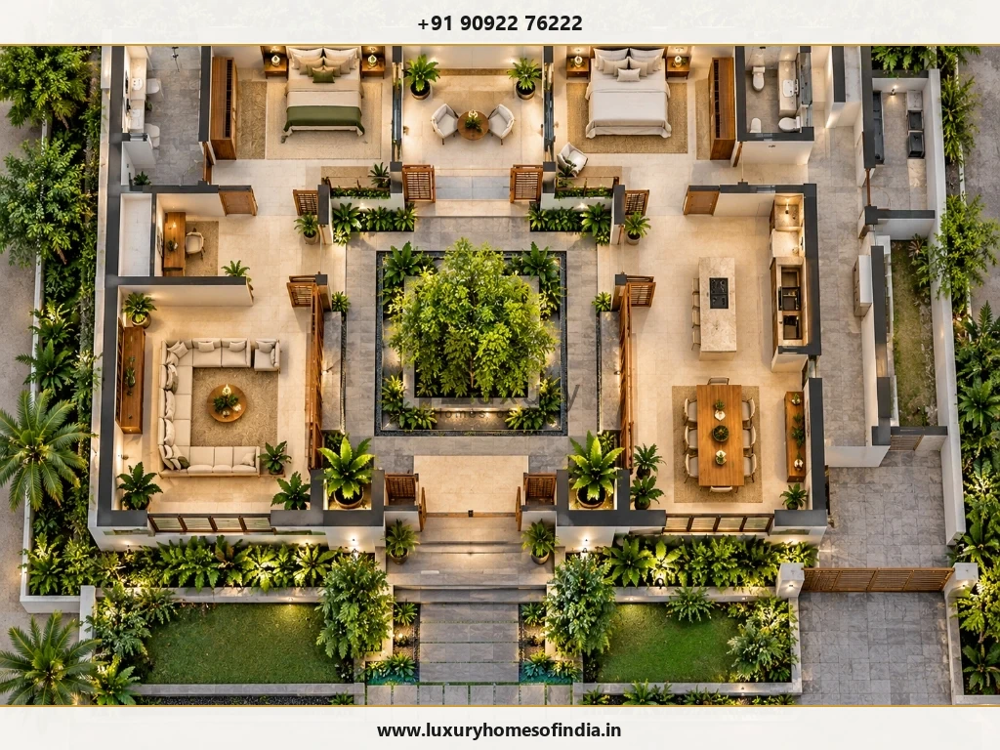
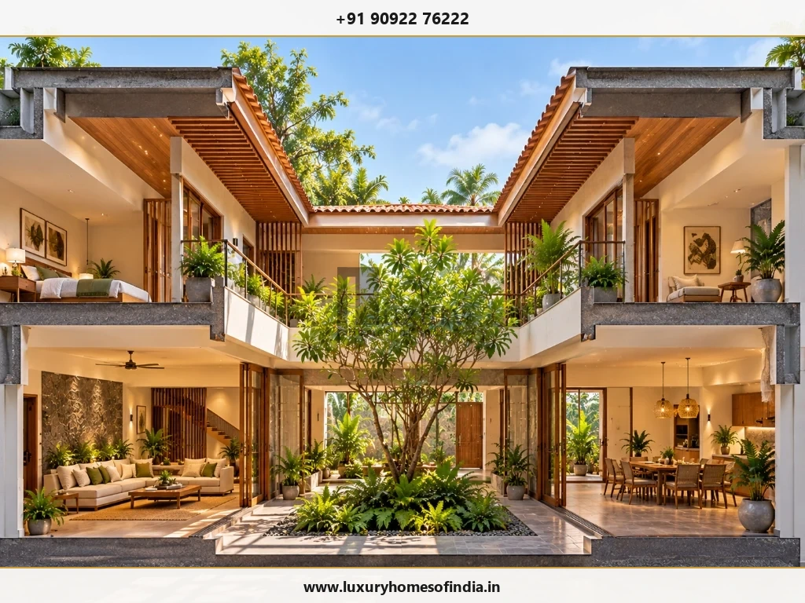
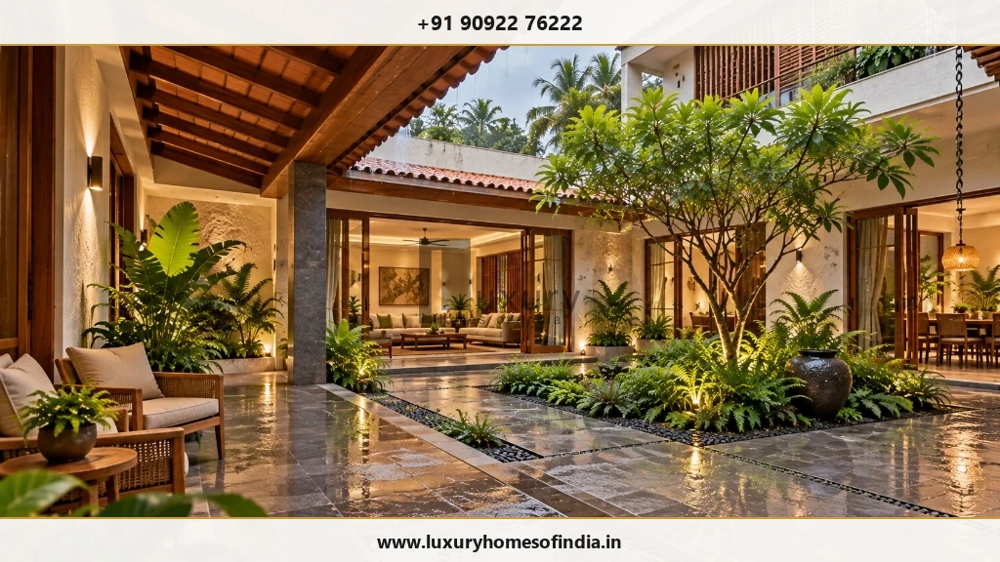
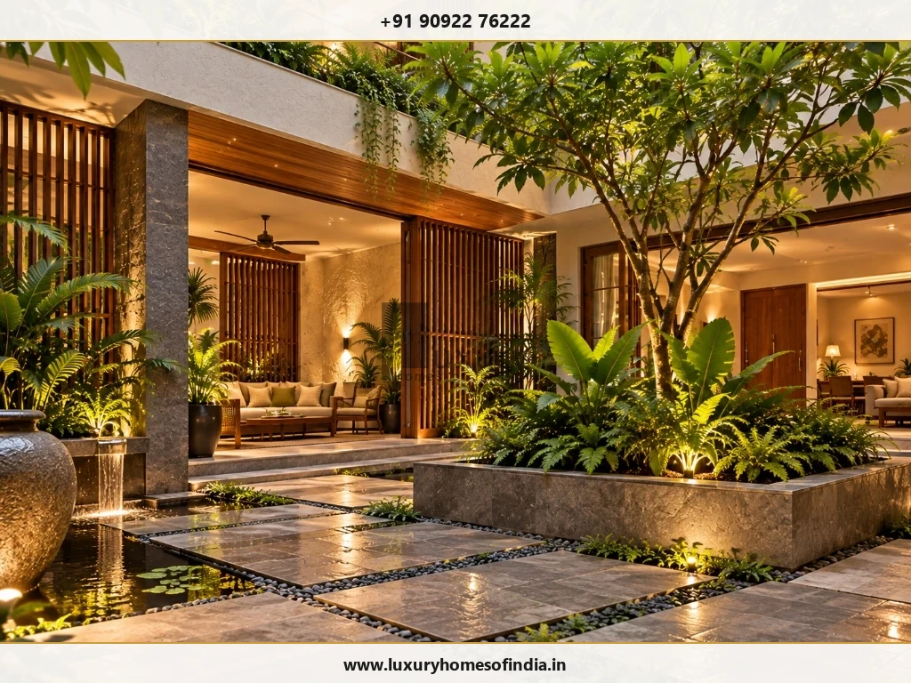

Luxury Courtyard Home Design in Chennai
A courtyard planned as part of the home—not added to it.
Key Takeaways: Courtyard Home Planning
- Integrated Spatial Architecture: Courtyards must be planned simultaneously with surrounding living, dining, circulation, and bedroom zones rather than inserted into a fixed plan.
- Microclimate & Ventilation: An open-to-sky central shaft leverages thermal stack effect ventilation, lowering indoor temperatures and channeling daylight into core spaces.
- Monsoon Drainage Engineering: High-capacity sub-surface drainage channels, sloped granite paving, and recessed thresholds prevent heavy Chennai monsoon overflow into adjacent rooms.
- Vastu Harmony: Open Brahmasthan central cores can be aligned with modern architectural sightlines and structural framing.
A luxury courtyard home in Chennai is not simply a house with an open-to-sky garden. The courtyard should influence how living spaces, bedrooms, circulation, privacy, daylight, drainage and landscape work together.
A well-considered courtyard can become a private centre for the home—a place to gather, pause, enjoy planting or bring views of greenery into surrounding rooms.
At Luxury Homes of India, residential planning can be developed around your lifestyle, plot and design preferences. If you are exploring luxury courtyard home design in Chennai, begin by deciding what the courtyard should contribute to the home and then plan the rooms around that relationship.
Discuss Your Courtyard Home Requirements
Connect with Luxury Homes of India architectural planning team to design a bespoke courtyard layout tailored to your plot dimensions and lifestyle.

What makes a courtyard work in a luxury home?
Luxury in courtyard design does not have to mean adding more features. It can come from the quality of the relationships between spaces.
A courtyard may provide:
- Private Greenery Views: A private view from living and dining areas.
- Outdoor Seating: A serene setting for quiet seating and morning coffee.
- Visual Connection: A visual connection between different parts of the home across levels.
- Sculptural Planting: Space for selected tropical planting and water features.
- Arrival Sequence: A calm transition between arrival and interior spaces.
- Spatial Buffer: A natural buffer between shared entertaining spaces and private quarters.
The intended use matters. A courtyard designed mainly as a planted visual feature will need different planning from one intended for everyday seating, family gatherings or direct access from living spaces.
Plan the courtyard and the rooms together
The surrounding layout determines how the courtyard will actually be experienced.
A courtyard should not create awkward corridors, compromise essential rooms or interrupt practical movement through the house.
Living and dining connections
Decide whether the courtyard is viewed through large floor-to-ceiling glass openings, accessed directly via sliding timber doors, or treated as a seamless extension of shared living areas. The relationship between floor levels, thresholds, veranda shading and outdoor furniture should be considered together.
Bedroom privacy
A shared courtyard can connect rooms visually, but that connection may not suit every household. Review sightlines between bedrooms, balconies and the courtyard before finalising openings.
Circulation
People should be able to move comfortably around the courtyard even after furniture, planter boxes and ambient lighting are installed. Avoid creating narrow routes that become difficult to use once the home is occupied.
Upper-floor relationships
In a multi-storey home, the courtyard becomes a vertical space as well as a horizontal one. Review overlooking, balcony positions, proportions, daylight penetration and the relationship between upper and lower levels.


Have a Chennai plot already?
Discuss your plot dimensions and courtyard orientation before freezing the room floor plan.
Discuss Layout OptionsExplore the right courtyard arrangement
There is no single courtyard template that works for every Chennai home.
A central courtyard
A courtyard near the centre of the home can organize surrounding rooms and create a strong internal focal point. Its feasibility depends on the plot dimensions, room requirements and the amount of area available without compromising the wider plan.
A side courtyard
A courtyard along one side of the building may provide a more selective outdoor connection for particular rooms. Review neighbouring properties, boundary setbacks, access and privacy together.
An entrance courtyard
A courtyard near the arrival sequence can create a transition between the street and the interior. Arrival, car parking, visitor movement and privacy should be considered as one architectural composition.
A courtyard between building zones
Where the site permits, an outdoor space can separate shared family areas from quieter bedroom wings while maintaining a visual relationship between them.
These are design possibilities—not fixed templates. The appropriate arrangement should respond to your specific plot.
Design for Chennai's sun and rain
An open-to-sky courtyard needs to respond to actual Chennai environmental conditions.
Sunlight and shading
Review orientation, courtyard proportions and surrounding building heights. Different parts of the courtyard may receive different levels of solar exposure during the day. Shading elements like timber pergolas, overhanging eaves, and louvers can be explored where appropriate, but their light effect should be assessed rather than assumed.
Drainage
Plan surface falls, heavy-duty drainage channels, and discharge routes early. Water should never collect against the building or overflow into adjoining rooms. Thresholds and external paving levels should be coordinated with structural detailing.
Weather protection
Nearby doors, windows and wall finishes need to respond to rain exposure. If a glass skylight or retractable roof is proposed, it changes the courtyard's light, heat accumulation, airflow and drainage conditions and needs separate technical review.
Comfort
A courtyard does not automatically make a home cooler. Its contribution to thermal comfort depends on the site and the design. Shading, airflow openings, and indoor comfort requirements should therefore be considered as part of the overall architectural strategy.

Planting that suits the space
A courtyard garden should respond to available sunlight, planting soil depth and maintenance access.
Consider:
- Plant Scale: Mature plant height and canopy spread.
- Soil Depth: Soil depth, container drainage, and root barrier membranes.
- Irrigation: Automated drip irrigation and drainage outlets.
- Structural Proximity: Relationship of root systems with foundation footings and utility pipes.
- Upkeep: Routine cleaning, leaf clearing, and maintenance access.
- Replacement Access: Easy access for replacing mature plants or soil media.
- Framed Views: Visual framing from surrounding living rooms and verandas.
Avoid selecting plants only because they look attractive in a reference image. Their suitability should be confirmed for actual courtyard light and moisture conditions.
Materials and details that support daily use
A refined courtyard should remain practical after installation.
| Design Element | What to Review |
|---|---|
| Paving | Intended use, water drainage slopes, anti-slip texture, and ease of cleaning (granite, basalt, flamed stone) |
| Thresholds | Recessed channel levels, step differences, and weather-proof door seals |
| Walls | Weather exposure, lime plaster or textured finishes, and cleaning durability |
| Seating | Built-in stone benches, teak seating, shade protection, and circulation clearance |
| Lighting | Warm night atmosphere, IP67 outdoor fixtures, safe step lighting, and servicing access |
| Planters | Water proofing liners, sub-surface drainage mats, structural weight, and maintenance access |
| Screens | Privacy sightlines, breeze airflow, durable timber/metal fixings, and upkeep |
The most successful material choices are not simply visually impressive. They also suit the courtyard's exposure, use and maintenance requirements.

Coordinate architecture, landscape and services
A courtyard affects several parts of a residential project.
Drainage outlets, soil preparation, night lighting and adjacent room access should be reviewed together. Water features and other specialist additions require their own filtration equipment, plumbing lines and maintenance scope.
At Luxury Homes of India, our comprehensive offering spans architectural planning, structural engineering, landscape integration, and turnkey construction across Chennai. Every courtyard detail is coordinated under unified residential project management.
Understand your design appointment
Before committing to a courtyard home design, clarify that your project agreement covers:
- Site & Plot Assessment: Site orientation, boundaries, and building approval constraints.
- Architectural Deliverables: Floor plans, elevations, sections, and 3D visualizations.
- Technical Detailing: Structural engineering, drainage slope plans, and waterproofing specifications.
- Landscape Scope: Softscape planting plans, planter detailing, and irrigation lines.
- Revisions & Support: Drawing revision allowances and construction supervision.
The courtyard's area, finishes and technical requirements should also be reflected in the overall project budget.
Frequently asked questions
Let's design a courtyard that belongs to your home
A courtyard works best when it is considered from the beginning—not added after the main rooms have already been fixed.
Bring your plot, priorities and ideas to the conversation and discuss how a private outdoor space could fit into your home's architecture, circulation, privacy and landscape.
Start Your Courtyard Home Discussion
Consult with Luxury Homes of India technical architectural team to discuss your plot layout, courtyard concepts, Vastu alignment, and turnkey construction scope.